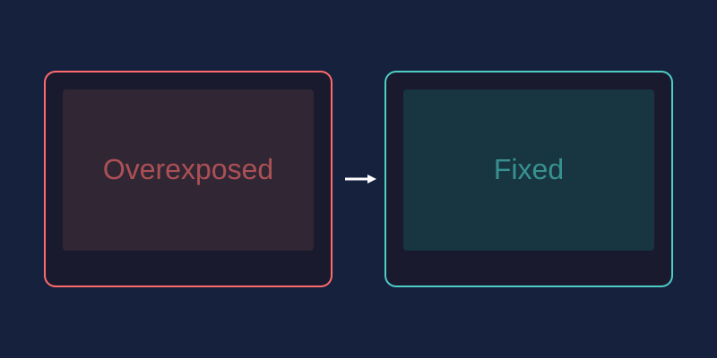

Almost every imperfect photo you have ever taken falls into one of a few familiar categories. The good news: each problem has a straightforward correction you can apply in a browser editor like miniPhotoShop without spending a cent.
1. Overexposure (Too Bright)
When highlights blow out to pure white, detail is gone forever, but mild overexposure is recoverable. Open the brightness and contrast controls and lower exposure or brightness by 10-30%. Then pull the highlights slider down if available. Watch the sky in landscape shots; texture returning there is your sign of success.
2. Underexposure (Too Dark)
Dark images hide detail but rarely lose it completely. Raise brightness gradually until shadows open up, then add a touch of contrast so the photo does not look flat. If lifting shadows introduces gray haze, nudge the blacks down slightly to restore depth.
3. Color Cast (Wrong Tint)
Indoor tungsten bulbs make everything orange; shade makes snow look blue. Fix this with temperature and tint sliders: move temperature toward blue for orange casts and toward yellow for blue ones. For precision, use the levels tool and adjust each color channel individually until whites look genuinely white.
4. Red-Eye
Flash reflecting off retinas turns pupils glowing red. Select the red-eye removal tool if your editor has one, or do it manually: zoom into the eye, use a desaturate brush on the pupil, then paint a tiny dark dot back into the center. Thirty seconds per eye is all it takes.
5. Slight Blurriness
Motion blur and missed focus cannot be fully reversed, but sharpening helps a lot. Apply a sharpen filter at moderate strength, and increase clarity or structure if offered. Avoid maximum settings; oversharpened photos develop ugly halos around edges. Small doses applied twice beat one heavy application.
6. Digital Noise (Grainy Speckles)
Low-light shots often come out speckled with colored dots. A noise reduction filter smooths these away, but it also softens real detail, so keep strength low and pair it with gentle sharpening afterward. If only the shadows are noisy, some editors let you reduce noise there specifically while leaving sharp areas untouched.
7. Crooked Horizon
A tilted horizon ruins an otherwise great seascape. Use the rotate or straighten tool and drag until a reference line, such as the waterline or a building edge, sits level. Rotation leaves empty corners, so crop slightly to remove them. Many editors show a grid overlay that makes leveling effortless.
The Universal Workflow
- Straighten and crop first
- Correct exposure next
- Fix color cast
- Finish with noise reduction, then sharpening
- Export as JPG for sharing
Following that order prevents corrections from fighting each other. Load any troubled photo into miniPhotoShop and run through the list; most images need only two or three of these fixes to look dramatically better.